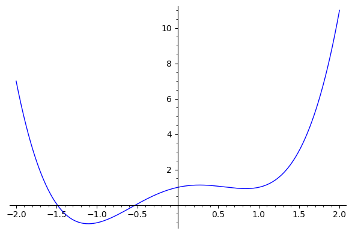

Algebraic Number Theory, Lecture 15#
This notebook was created for the course on Algebraic Number Theory at Nagoya University in the Fall semester 2021/2022.
See https://www.henrikbachmann.com/algnt_2021.html for the lecture notes and infos on this course.
Basics#
Create the number field \(K=\mathbb{Q}(i)\) and its ring of integers \(\mathcal{O}_K=\mathbb{Z}[i]\) by using the minimal polynomial \(x^2+1\) of \(i\):
K.<y> = NumberField(x^2+1)
O = K.ring_of_integers()
Factor the ideal \((13)\) in \(\mathbb{Z}[i]\):
I=O.ideal(13);
I.factor()
(Fractional ideal (-3*y - 2)) * (Fractional ideal (2*y + 3))
# Naive way of finding the representation of p as a sum of two squares
p=4001
for a in range(p):
for b in range(1,a+1):
if a^2+b^2==p:
print(p," = ", a,"^2 + ",b,"^2")
4001 = 49 ^2 + 40 ^2
Factorizing \(6\) in \(\mathbb{Z}[\sqrt{-5}]\).
K.<y> = NumberField(x^2+5); O = K.ring_of_integers();
I=O.ideal(6)
I.factor()
(Fractional ideal (2, y + 1))^2 * (Fractional ideal (3, y + 1)) * (Fractional ideal (3, y + 2))
p1=O.ideal(2,y+1); p2=O.ideal(3,y+1); p3=O.ideal(3,y+2);
print("p1^2 = ",p1^2)
print("p2*p3 = ",p2*p3)
print("p1*p2 = ",p1*p2)
print("p1*p3 = ",p1*p3)
p1^2 = Fractional ideal (2)
p2*p3 = Fractional ideal (1)
p1*p2 = Fractional ideal (y + 1)
p1*p3 = Fractional ideal (y + 1)
Trace and Norm#
K.<y> = NumberField(x^2+1)
m=5+4*y
print("The element ", m , " has norm ", m.norm() ," and trace ", m.trace() )
The element 4*y + 5 has norm 41 and trace 10
Consider the polynomial \(f(x)=x^4-2x^2+x+1\). This has two real roots and one pair of complex conjugates. We can plot the graph of it by using the following code:
f(x)=x^4-2*x^2+x+1
plot(f(x),(x,-2,2))

The roots of \(f\) can be calculated by f.roots():
f(x)=x^4-2*x^2+x+1
for r in f.roots():
print(r[0].n())
-1.49021612009995
-0.524888598656405
1.00755235937818 - 0.513115795597015*I
1.00755235937818 + 0.513115795597015*I
Now consider the number field obtained by adjoining a root of \(f\):
K.<y> = NumberField(f(x))
print("K is a",K,"\nThe degree is ", K.degree())
[r,s]=K.signature()
print("K has",r," real embeddings and ",s, "pair of complex embeddings")
K is a Number Field in y with defining polynomial x^4 - 2*x^2 + x + 1
The degree is 4
K has 2 real embeddings and 1 pair of complex embeddings
# Using the built-in functions for norm and trace
a=y^2-3
print(a, " has norm ", a.norm(), " and trace ", a.trace())
y^2 - 3 has norm 13 and trace -8
The trace and norm can be calculated by \begin{align*} \operatorname{Tr}{L/K}(x) &= \sum{i=1}^n \sigma_i(x),,\ \operatorname{N}{L/K}(x) &= \prod{i=1}^n \sigma_i(x),. \end{align*} where \(\sigma_i : K \rightarrow \mathbb{C}\) runs through all embeddings of \(K\). If \(\theta_1,\dots,\theta_4\) are the roots of \(f\), then \(\sigma_i\) for an element \(a=\sum_{j=0}^3 a_j y^j\) is given for \(i=1,\dots,4\) by \begin{align*} \sigma_i: \sum_{j=0}^3 a_j y^j \mapsto \sum_{j=0}^3 a_j \theta_i^j \end{align*}
# Calculating the norm&trace of y^2-3 by using the roots of the polynomial f
p(x)=x^2-3
norm=1
trace=0
for r in f.roots():
norm*=p(r[0])
trace+=p(r[0])
print(a, " has norm ", norm.n(), " and trace ", trace.n())
y^2 - 3 has norm 13.0000000000000 and trace -8.00000000000000
Sage can also create all the \(\mathbb{C}-\)embeddings of K:
K.embeddings(CC)
[
Ring morphism:
From: Number Field in y with defining polynomial x^3 - x^2 - 2*x - 8
To: Complex Field with 53 bits of precision
Defn: y |--> -0.883672870430983 - 1.45257666464430*I,
Ring morphism:
From: Number Field in y with defining polynomial x^3 - x^2 - 2*x - 8
To: Complex Field with 53 bits of precision
Defn: y |--> -0.883672870430983 + 1.45257666464430*I,
Ring morphism:
From: Number Field in y with defining polynomial x^3 - x^2 - 2*x - 8
To: Complex Field with 53 bits of precision
Defn: y |--> 2.76734574086197
]
With this we can compute the norm and trace as follows:
# Calculating the norm&trace of y^2-3 by using the C-embeddings
embeddings=K.embeddings(CC);
a=y^2-3
norm=1
trace=0
for e in embeddings:
norm*=e(a)
trace+=e(a)
print(a, " has norm ", norm.n(), " and trace ", trace.n())
y^2 - 3 has norm 13.0000000000000 + 8.88178419700125e-16*I and trace -8.00000000000000
Discriminant#
Let \(\omega_1,\dots,\omega_w\) be an integral basis of \(K\). Then the discriminant of \(K\) is given by \begin{align*} d_K = d(\omega_1,\dots,\omega_n) = \det( \sigma_i(\omega_j) )^2, \end{align*} where \(\sigma_i\) run again through all embeddings of \(K\).
g(x)=x^3-x^2-2*x-8
K.<y> = NumberField(g(x))
print("K is a",K,"\nThe degree is ", K.degree())
[r,s]=K.signature()
print("K has",r," real embeddings and ",s, "pair of complex embeddings")
# Using the built in function for the discriminant & integral basis
print("discriminant: ", K.discriminant())
print("integral basis: ",K.integral_basis())
K is a Number Field in y with defining polynomial x^3 - x^2 - 2*x - 8
The degree is 3
K has 1 real embeddings and 1 pair of complex embeddings
discriminant: -503
integral basis: [1, 1/2*y^2 + 1/2*y, y^2]
Calculating the discriminant by using the integral basis
# Calculating the discriminant by using an integral basis
B=K.integral_basis()
embeddings=K.embeddings(CC)
n=K.degree();
mat=matrix.zero(CC,n,n)
for i in range(n):
for j in range(n):
mat[i,j]=embeddings[i](B[j])
print(det(mat)^2)
-503.000000000000
Class number & Analytic class number formula#
Let \(K=\mathbb{Q}(\sqrt{-5})\) then \(\mathcal{O}_K=\mathbb{Z}[\sqrt{-5}]\). The class number is \(h_K=2\) and we can compute the classes as follows:
K.<y> = NumberField(x^2+5)
CK = K.class_group();
print(CK)
print("generators: ",CK.gen())
print("class number: ",K.class_number())
Class group of order 2 with structure C2 of Number Field in y with defining polynomial x^2 + 5
generators: Fractional ideal class (2, y + 1)
class number: 2
# Analytic class number formula
K.<y> = NumberField(x^2+5)
DZ = K.zeta_function()
[r,s]=K.signature()
RK=K.regulator()
wK=K.zeta_order()
dK=K.discriminant()
hK=K.class_number()
print("RHS:", 2^r*(2*pi.n())^s*hK*RK/(wK*sqrt(abs(dK.n()))))
print("LHS: ",(0.9999999-1)*DZ(0.9999999))
RHS: 1.40496294620815
LHS: 1.40496290972109
Cyclotomic fields & regular primes#
A prime \(p\) is called regular if \(p\) does not divide \(h_{\mathbb{Q}(\zeta_p)}\)
Recall the criteria of Kummer: A prime \(p\) is regular if and only if it does not divide the numerator of the Bernoulli numbers \(B_k\) for \(k=2,4,\dots,p-3\).
# Cyclotomic field
p=13
K.<p> = CyclotomicField(p);
print(K)
Cyclotomic Field of order 13 and degree 12
# List of Bernoulli numbers B_0,....,B_9
for k in range(10):
print(bernoulli(k))
1
-1/2
1/6
0
-1/30
0
1/42
0
-1/30
0
# Check if a prime is regular by using the definition
p=23
K.<y> = CyclotomicField(p)
# the command %time measures the time it takes for a command to be executed
%time classnumber = K.class_number()
print("")
print("class number: ", classnumber)
if classnumber % p != 0:
print(p, " is regular")
else:
print(p, " is not regular")
CPU times: user 9 µs, sys: 1 µs, total: 10 µs
Wall time: 10 µs
class number: 3
23 is regular
# Using Kummer's criteria to check if a prime is regular
p=37
regular=True
for k in range(2,p-2):
if k % 2 ==0 and bernoulli(k).numerator() % p == 0:
regular=False
break
if regular:
print(p, " is regular")
else:
print(p, " is not regular")
37 is not regular
# Give all irregular primes up to a given bound
P = Primes()
for n in range(30):
p = P.unrank(n)
regular=True
for k in range(2,p-2):
if k % 2 ==0 and bernoulli(k).numerator() % p == 0:
regular=False
break
if not regular:
print(p, " is not regular")
37 is not regular
59 is not regular
67 is not regular
101 is not regular
103 is not regular
Units#
K.<y> = NumberField(x^2-7)
UK = UnitGroup(K);
print(UK);
print("generators: ", UK.gens_values())
zeta=UK.gens()[0]
eps1=UK.gens()[1]
Unit group with structure C2 x Z of Number Field in y with defining polynomial x^2 - 7
generators: [-1, 3*y - 8]
K.<y> = NumberField(x^5-8*x^2+36)
UK = UnitGroup(K);
print(UK);
print("generators: ", UK.gens_values())
zeta=UK.gens()[0]
eps1=UK.gens()[1]
eps2=UK.gens()[2]
Unit group with structure C2 x Z x Z of Number Field in y with defining polynomial x^5 - 8*x^2 + 36
generators: [-1, 1/6*y^3 + 1/3*y^2 + 2/3*y + 1, 431/6*y^4 + 165/2*y^3 + 35*y^2 - 2384/3*y - 1525]
Ramification#
# Calculate the ramification indices and inertia degrees
K.<y> = NumberField(x^2+1)
p=K.ideal(53)
fac=K.factor(p)
print("The ideals over ", p, " are:")
for P in fac:
print(P[0], "with ramification index e =", P[1], " and inertia degree f =", P[0].residue_class_degree())
The ideals over Fractional ideal (53) are:
Fractional ideal (-2*y + 7) with ramification index e = 1 and inertia degree f = 1
Fractional ideal (2*y + 7) with ramification index e = 1 and inertia degree f = 1